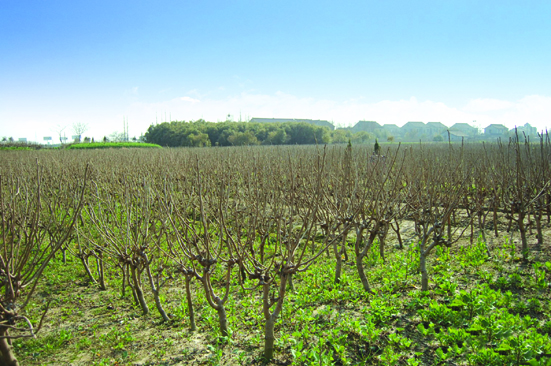

大墩港遗址
嘉兴市文物保护网 · 市级文物保护单位 · 2014-06-13 · 原文

大墩岗遗址位于嘉兴市秀洲区王店镇建南村佛子自然村23、24组，钱新公路西50米处，沪杭高速西北侧30米左右，靠南50米有河港。遗址面积13000平方米，原土墩有3米多高。1999年园区开发时发现玉璧、玉镯、黑皮陶折腹碗、石镞、玉珠和玉锥形饰各一件，并上交嘉兴博物馆。据出土文物可知该遗址为新石器时代良渚文化的聚落址。经过土地平整现遗址范围内种植桑树，已无高墩。大墩岗遗址范围较大，出土文物档次较高、类型特殊，反映了这一地区在良渚文化时期的特殊地位，有较高的历史和科学价值。2009年公布为嘉兴市级文物保护单位。